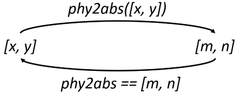

Structure#
laygo2 is composed of the following three sub-packages.
object package implements various physical and abstract objects that compose layouts.
interface package handles various interactions between laygo2 and external objects (EDA tools, data structures, files).
util package contains useful functions for other sub-packages.
Brief explanations on the sub-packages can be found in the following sections, and check the API reference for details on key classes and functions.
object package#
The object package includes various classes for physical and abstract objects (API reference link).
The folowing modules compose the object package:
physical module is defining classes for physical objects that compose actual IC layout.
template module describes classes for templates that generate various instance objects for target technology and design parameters.
grid module describes grid classes to abstract placement and routing coordinates. parameterizations.
database module implements classes for design hierarchy management.
The following figure illustrates a UML diagram of the object package.

physical module#
The physical module implments classes for physical layout objects (API reference link).
Here are the summary of classes in the physical module:
PhysicalObject is the base class for physical objects.
IterablePhysicalObject(PhysicalObject) is the base class for ‘iterable’ physical objects (such as arrays and groups).
PhysicalObjectGroup(IterablePhysicalObject) is a dedicated class for groups of physical objects (not implemented yet).
Rect(PhysicalObject) is for rect objects.
Path(PhysicalObject) is for path objects.
Pin(IterablePhysicalObject) is for pin objects.
Text(PhysicalObject) is for text objects.
Instance(IterablePhysicalObject) is for instances.
VirtualInstance(IterablePhysicalObject) is for virtual instances (a group of objects that acts as a single instance).
The following figure illustrates examples of the physical objects from one of the classes.
template module#
template module is composed of classes that abstract instances and virtual instances. (API reference link).
Here are the summary of classes in the template module:
Template is the basic templates class.
NativeInstanceTemplate(Template) is a template class that generates Instance objects.
ParameterizedInstanceTemplate(Template) generates ParameterizedInstance objects with its user-defined bbox function.
UserDefinedTemplate(Template) generates VirtualInstance objects with its bbox / pins / generate functions.
grid module#
grid module is composed of classes that implement abstract coordinate systems that are interacting with technology-specific physical coordinate systems. (API reference link).
laygo2 implements the layout designs based on the abstract coordinate system.

The grid module implements the following classes.
CircularMapping: basic circular mapping class.
CircularMappingArray(CircularMapping): a multi-dimensional circular mapping class.
_AbsToPhyGridConverter: an abstract-to-physical coordinate converter class.
_PhyToAbsGridConverter: a physical-to-abstract coordinate converter class.
OneDimGrid(CircularMapping): an one-dimensional grid classes
Grid: a two-dimensional grid classes.
PlacementGrid(Grid): a 2-dimensional grid class for instance placement.
RoutingGrid(Grid): a 2-dimensional grid class for wire routing.
CircularMapping class#
CircularMapping class implements basic circular mappings (their indices extend to the entire axis with cyclic mapping). The following code block shows several examples of using CircularMapping objects.
>>> map = CircularMapping(elements=[100, 200, 300])
>>> print(map[0])
100
>>> print(map[2])
300
>>> print(map[4])
200
>>> print(map[-3])
100
>>> print(map[[2, 3, -2])
[300, 100, 200]
>>> print(map[2:7])
[300, 100, 200, 300, 100]
_AbsToPhyGridConverter class#
_AbsToPhyGridConverter is an internal class that converts abstract coordinates to physical coordinates. It also supports reverse conversions (physical-to-abstract) with comparison operators (which requires its pair converter class, _PhyToAbsGridConverter defined in its master grid object).

_PhyToAbsGridConverter class#
_PhyToAbsGridConverter is an internal class that converts physical coordinates to abstract coordinates. It also supports reverse conversions (abstract-to-physical) with comparison operators (which requires its pair converter class, _AbsToPhyGridConverter defined in its master grid object).

Grid class#
Grid class implements an abstract coordinate that is mapped to a 2-dimensional physical coordinate system.
The Grid class and its objects support various coordinate conversion functions, with their examples introduced in the following figure.

database module#
database module consists classes that implement design hierarchy to manage designs and libraries with its component classes described as follows:
BaseDatabase is the basic database management class.
Library(BaseDatabase) is the library management class.
Design(BaseDatabase) is the design management class.
interface package#
interface package includes classes and functions that interact with laygo2 and external EDA tools or data structures. (API reference link).

gds module contains various functions to store the layout structures in GDS-II format, which is the most popular format to store layout structures.
yaml module contains various I/O functions to express designs in yaml format.
virtuoso module contains various functions that interacts with Cadence Virtuoso using Skill language.
util package#
util package contains various functions used in other packages.